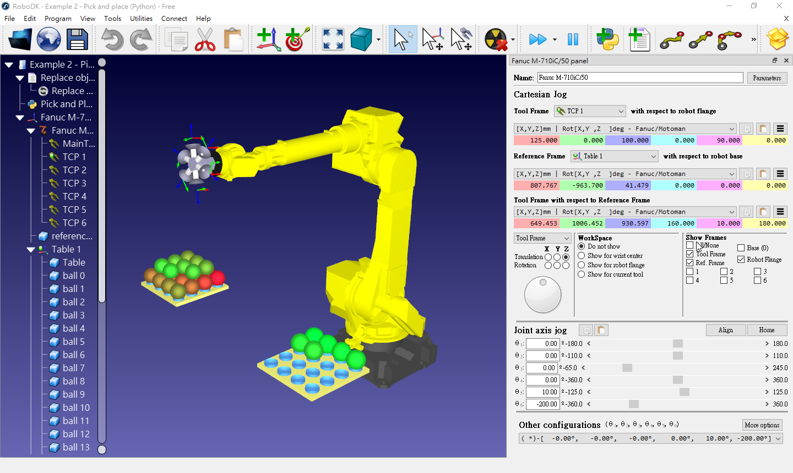
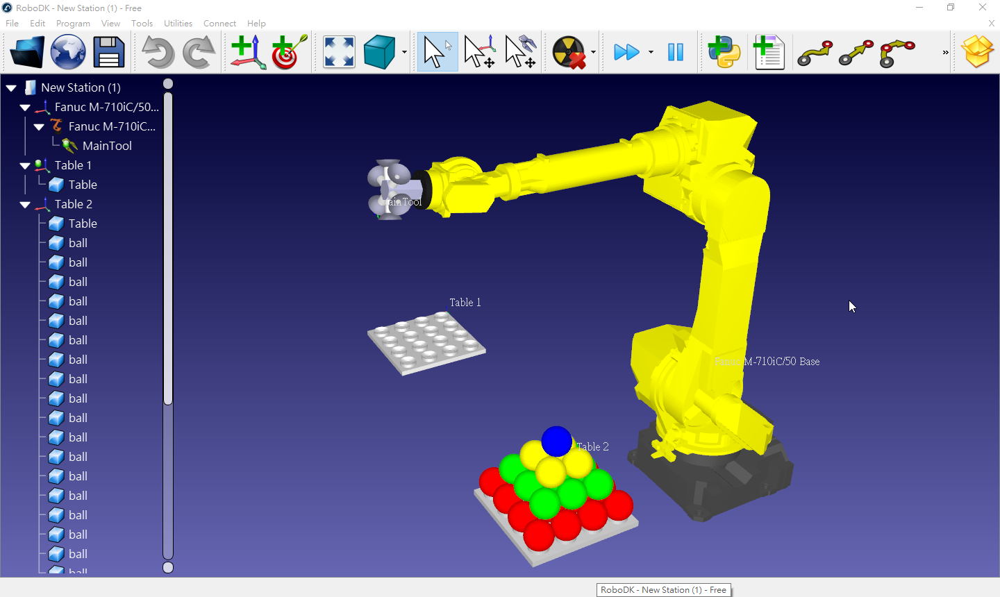

Virtualbox 安裝操作系統 <<
Previous Next >> IYEP
RoboDK
安裝 Windows 10 後, 可從 robodk522_portable.7z 下載可攜 RoboDK free trial 套件 (無法存檔), 執行下列實習:
- 近端 Python API 操控
- 跨區域網路 Python remote API 操控
- 網際 Python remote API 操控
近端 Python API 操控
由於 RoboDK 提供 Python API 控制模組, 一旦可攜 Python 程式套件安裝 robodk 模組後, 就可以利用 Python 程式控制各式工業級六軸機械手臂.
安裝 robodk 模組
pip install robodk
開啟 RoboDK
解開 robodk522_portable.7z 壓縮檔案後, 執行 bin/RoboDK.exe 即可執行 RoboDK free trial 版本.
下載 pick and place rdk 專案檔
從 https://github.com/mdecourse/wcmj2021/blob/main/downloads/robodk/pick_and_place/pick_and_place_with_python.rdk 下載範例專案檔, 存為 y:\tmp\pick_and_place.rdk 後, 以 RoboDK 開啟專案檔.
下載 pick and place python 程式檔
從 https://raw.githubusercontent.com/mdecourse/wcmj2021/main/downloads/robodk/pick_and_place/pick_and_place.py 另存新檔為 y:\tmp\pick_and_place.py 後, 以可攜系統的 SciTE 編輯器開啟.
由於 RoboDK 的 API 伺服器內建於 localhost, 因此只要以 Tools-Go 執行 pick_and_place.py 即可控制近端的 pick_and_place.rdk 專案檔案中的機械手臂.

延伸練習:
https://robodk.com/doc/en/Basic-Guide.html
https://robodk.com/doc/en/RoboDK-API.html#RoboDKAPI
https://robodk.com/doc/en/PythonAPI/robolink.html#robolink.Robolink.AddFile
https://github.com/RoboDK/RoboDK-API/tree/master/Python
https://robodk.com/doc/en/Robot-Programs-Simulation-event.html
http://a.kmol.info:88/Robot_files.7z
以下範例執行時透過 Replace Objects 程式段讓 Table 互換, 假如不呼叫執行此一 Replace Objects, 能否讓 Robot 將 Table 2 的球放回 Table 1?
# KMOLab Portable RoboDK pick and place
from robolink import * # API to communicate with robodk
from robodk import * # robodk robotics toolbox
# Setup global parameters
BALL_DIAMETER = 100 # diameter of one ball
APPROACH = 100 # approach distance to grab each part, in mm
# Tool Center Point (TCP)
nTCPs = 6 # number of TCP's in the tool
#----------------------------------------------
# Function definitions
def box_calc(BALLS_SIDE=4, BALLS_MAX=None):
"""Calculate a list of points (ball center) as if the balls were stored in a box"""
if BALLS_MAX is None: BALLS_MAX = BALLS_SIDE**3
# xyz_list 資料型別設定為數列 (List)
xyz_list = []
# 建立三層 for 迴圈
for h in range(BALLS_SIDE):
for i in range(BALLS_SIDE):
for j in range(BALLS_SIDE):
xyz_list = xyz_list + [[(i+0.5)*BALL_DIAMETER, (j+0.5)*BALL_DIAMETER, (h+0.5)*BALL_DIAMETER]]
if len(xyz_list) >= BALLS_MAX:
return xyz_list
return xyz_list
def pyramid_calc(BALLS_SIDE=4):
"""Calculate a list of points (ball center) as if the balls were place in a pyramid"""
#the number of balls can be calculated as: int(BALLS_SIDE*(BALLS_SIDE+1)*(2*BALLS_SIDE+1)/6)
BALL_DIAMETER = 100
xyz_list = []
sqrt2 = 2**(0.5)
for h in range(BALLS_SIDE):
for i in range(BALLS_SIDE-h):
for j in range(BALLS_SIDE-h):
height = h*BALL_DIAMETER/sqrt2 + BALL_DIAMETER/2
xyz_list = xyz_list + [[i*BALL_DIAMETER + (h+1)*BALL_DIAMETER*0.5, j*BALL_DIAMETER + (h+1)*BALL_DIAMETER*0.5, height]]
return xyz_list
def balls_setup(frame, positions):
"""Place a list of balls in a reference frame. The reference object (ball) must have been previously copied to the clipboard."""
nballs = len(positions)
step = 1.0/(nballs - 1)
for i in range(nballs):
newball = frame.Paste()
newball.setName('ball ' + str(i)) #set item name
newball.setPose(transl(positions[i])) #set item position with respect to parent
newball.setVisible(True, False) #make item visible but hide the reference frame
newball.Recolor([1-step*i, step*i, 0.2, 1]) #set RGBA color
def cleanup_balls(parentnodes):
"""Delete all child items whose name starts with \"ball\", from the provided list of parent items."""
todelete = []
for item in parentnodes:
todelete = todelete + item.Childs()
for item in todelete:
if item.Name().startswith('ball'):
item.Delete()
def TCP_On(toolitem, tcp_id):
"""Attach the closest object to the toolitem Htool pose,
furthermore, it will output appropriate function calls on the generated robot program (call to TCP_On)"""
toolitem.AttachClosest()
toolitem.RDK().RunMessage('Set air valve %i on' % (tcp_id+1))
toolitem.RDK().RunProgram('TCP_On(%i)' % (tcp_id+1));
def TCP_Off(toolitem, tcp_id, itemleave=0):
"""Detaches the closest object attached to the toolitem Htool pose,
furthermore, it will output appropriate function calls on the generated robot program (call to TCP_Off)"""
toolitem.DetachAll(itemleave)
toolitem.RDK().RunMessage('Set air valve %i off' % (tcp_id+1))
toolitem.RDK().RunProgram('TCP_Off(%i)' % (tcp_id+1));
#----------------------------------------------------------
# The program starts here:
# Any interaction with RoboDK must be done through RDK:
RDK = Robolink()
# Turn off automatic rendering (faster)
RDK.Render(False)
#RDK.Set_Simulation_Speed(500); # set the simulation speed
# Gather required items from the station tree
robot = RDK.Item('Fanuc M-710iC/50')
robot_tools = robot.Childs()
#robottool = RDK.Item('MainTool')
frame1 = RDK.Item('Table 1')
frame2 = RDK.Item('Table 2')
# Copy a ball as an object (same as CTRL+C)
ballref = RDK.Item('reference ball')
ballref.Copy()
# Run a pre-defined station program (in RoboDK) to replace the two tables
prog_reset = RDK.Item('Replace objects')
prog_reset.RunProgram()
# Call custom procedure to remove old objects
cleanup_balls([frame1, frame2])
# Make a list of positions to place the objects
frame1_list = pyramid_calc(4)
frame2_list = pyramid_calc(4)
# Programmatically place the objects with a custom-made procedure
balls_setup(frame1, frame1_list)
# Delete previously generated tools
for tool in robot_tools:
if tool.Name().startswith('TCP'):
tool.Delete()
# Calculate tool frames for the suction cup tool of 6 suction cups
TCP_list = []
for i in range(nTCPs):
TCPi_pose = transl(0,0,100)*rotz((360/nTCPs)*i*pi/180)*transl(125,0,0)*roty(pi/2)
TCPi = robot.AddTool(TCPi_pose, 'TCP %i' % (i+1))
TCP_list.append(TCPi)
TCP_0 = TCP_list[0]
# Turn on automatic rendering
RDK.Render(True)
# Move balls
robot.setPoseTool(TCP_list[0])
nballs_frame1 = len(frame1_list)
nballs_frame2 = len(frame2_list)
idTake = nballs_frame1 - 1
idLeave = 0
idTCP = 0
target_app_frame = transl(2*BALL_DIAMETER, 2*BALL_DIAMETER, 4*BALL_DIAMETER)*roty(pi)*transl(0,0,-APPROACH)
while idTake >= 0:
# ------------------------------------------------------------------
# first priority: grab as many balls as possible
# the tool is empty at this point, so take as many balls as possible (up to a maximum of 6 -> nTCPs)
ntake = min(nTCPs, idTake + 1)
# approach to frame 1
robot.setPoseFrame(frame1)
robot.setPoseTool(TCP_0)
robot.MoveJ([0,0,0,0,10,-200])
robot.MoveJ(target_app_frame)
# grab ntake balls from frame 1
for i in range(ntake):
TCPi = TCP_list[i]
robot.setPoseTool(TCPi)
# calculate target wrt frame1: rotation about Y is needed since Z and X axis are inverted
target = transl(frame1_list[idTake])*roty(pi)*rotx(30*pi/180)
target_app = target*transl(0,0,-APPROACH)
idTake = idTake - 1
robot.MoveL(target_app)
robot.MoveL(target)
TCP_On(TCPi, i)
robot.MoveL(target_app)
# ------------------------------------------------------------------
# second priority: unload the tool
# approach to frame 2 and place the tool balls into table 2
robot.setPoseTool(TCP_0)
robot.MoveJ(target_app_frame)
robot.MoveJ([0,0,0,0,10,-200])
robot.setPoseFrame(frame2)
robot.MoveJ(target_app_frame)
for i in range(ntake):
TCPi = TCP_list[i]
robot.setPoseTool(TCPi)
if idLeave > nballs_frame2-1:
raise Exception("No room left to place objects in Table 2")
# calculate target wrt frame1: rotation of 180 about Y is needed since Z and X axis are inverted
target = transl(frame2_list[idLeave])*roty(pi)*rotx(30*pi/180)
target_app = target*transl(0,0,-APPROACH)
idLeave = idLeave + 1
robot.MoveL(target_app)
robot.MoveL(target)
TCP_Off(TCPi, i, frame2)
robot.MoveL(target_app)
robot.MoveJ(target_app_frame)
# Move home when the robot finishes
robot.MoveJ([0,0,0,0,10,-200])
假如希望透過 Python API 建立 RoboDK station (因為 free trial 版本無法存檔), 可以使用 https://github.com/mdecourse/wcmj2021/tree/main/downloads/robodk/pick_and_place_kmol_mac 目錄中的物件與程式, 範例程式如下:
from robolink import *
from robodk import *
# Calculate pyramid coordinate
def pyramid_calc(BALLS_SIDE=4):
"""Calculate a list of points (ball center) as if the balls were place in a pyramid"""
#the number of balls can be calculated as: int(BALLS_SIDE*(BALLS_SIDE+1)*(2*BALLS_SIDE+1)/6)
BALL_DIAMETER = 100
xyz_list = []
sqrt2 = 2**(0.5)
for h in range(BALLS_SIDE):
for i in range(BALLS_SIDE-h):
for j in range(BALLS_SIDE-h):
height = h*BALL_DIAMETER/sqrt2 + BALL_DIAMETER/2
xyz_list = xyz_list + [[i*BALL_DIAMETER + (h+1)*BALL_DIAMETER*0.5, j*BALL_DIAMETER + (h+1)*BALL_DIAMETER*0.5, height]]
return xyz_list
# Make a list of positions to place the objects
balls_list = pyramid_calc(4)
#print(len(frame1_list))
# 4*4 = 16
# 3*3 = 9
# 2*2 = 4
# 1+4+9+16 = 30
# height 50*sqrt(2)
'''
[
[50.0, 50.0, 50.0], [50.0, 150.0, 50.0], [50.0, 250.0, 50.0], [50.0, 350.0, 50.0],
[150.0, 50.0, 50.0], [150.0, 150.0, 50.0], [150.0, 250.0, 50.0], [150.0, 350.0, 50.0],
[250.0, 50.0, 50.0], [250.0, 150.0, 50.0], [250.0, 250.0, 50.0], [250.0, 350.0, 50.0],
[350.0, 50.0, 50.0], [350.0, 150.0, 50.0], [350.0, 250.0, 50.0], [350.0, 350.0, 50.0],
[100.0, 100.0, 120.71067811865474], [100.0, 200.0, 120.71067811865474], [100.0, 300.0, 120.71067811865474],
[200.0, 100.0, 120.71067811865474], [200.0, 200.0, 120.71067811865474], [200.0, 300.0, 120.71067811865474],
[300.0, 100.0, 120.71067811865474], [300.0, 200.0, 120.71067811865474], [300.0, 300.0, 120.71067811865474],
[150.0, 150.0, 191.42135623730948], [150.0, 250.0, 191.42135623730948],
[250.0, 150.0, 191.42135623730948], [250.0, 250.0, 191.42135623730948],
[200.0, 200.0, 262.13203435596427]
]
'''
# https://github.com/RoboDK/RoboDK-API/blob/master/Python/robolink.py
# robodk_path variable to specify location of RoboDK.exe
RDK = Robolink(args=["-NEWINSTANCE", "-SKIPINI", "-EXIT_LAST_COM"])
# Add robot and the accompanied Base coordinate
robot = RDK.AddFile('Fanuc-M-710iC-50.robot')
# Get the default robot base frame
robot_frame = RDK.Item('Fanuc M-710iC/50 Base')
# Move the base frame to the origin
robot_frame.setPose(transl(0,0,0))
# Add a tool to an existing robot:
tool = RDK.AddFile('MainTool.tool', robot)
# Add table 1
table1_frame = RDK.AddFrame('Table 1')
table1_frame.setPose(transl(807.766544,-963.699898,41.478944))
table1_stl = RDK.AddFile('Table.stl', table1_frame)
# Add table 2
table2_frame = RDK.AddFrame('Table 2')
table2_frame.setPose(transl(926.465508,337.151529,94.871928))
table2_stl = RDK.AddFile('Table.stl', table2_frame)
# Add balls
# create a list with 30 elements
balls = [None for _ in range(30)]
layer = [16, 9, 4, 1]
count = 0
for i in range(len(balls_list)):
# transl(balls_list)
balls[i] = RDK.AddFile('ball.stl', table2_frame)
balls[i].setPose(transl(balls_list[i]))
count = count + 1
if count <= 16:
balls[i].setColor([1, 0, 0])
elif count > 16 and count <= 25:
balls[i].setColor([0, 1, 0])
elif count > 25 and count <=29:
balls[i].setColor([1, 1, 0])
else:
balls[i].setColor([0, 0, 1])
所完成的 station 如下:

Virtualbox 安裝操作系統 <<
Previous Next >> IYEP